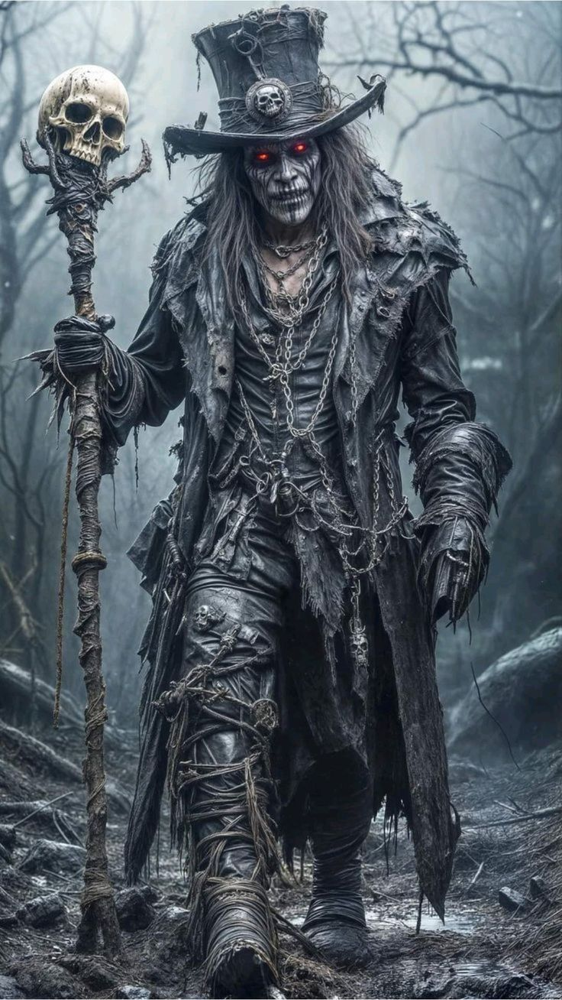

СУПЕРГЕРОЇ БАТАЛЬЙОНУ МОНАКО
Супергерой(англ. Superhero) — вигаданий персонаж, наділений неординарними фізичними здібностями(суперсилами), які він направляє
на звершення подвигів в ім'я загального блага.
Після дебюту Супермена в 1938 році, ідея супергероя — від коротких, епізодичних пригодницьких
історій до багаторічних багатосерійних саг стала панівною для американських коміксів, з яких вона згодом поширилася на інші медіа.
Супергероя жіночої статі іноді називають супергероїня.
-
Суперборщ
-
БетмеНШ
- РосоВаня
- Капітан Гуреука
- Халкодав

Суперборщ
тіло Суперборща надзвичайно міцне здатне витримувати смертельні для людей умови.
У ранніх коміксах кулі відлітали від нього,
не завдаючи шкоди, але розривні артилерійські снаряди могли поранити.
Вже в 1947 супергерой пережив атомний вибух. У 1951 згадується,
що у Супермена є імунітет до всіх хвороб, отрут токсинів. У 1960 говориться, що Супермен не старіє навіть потенційно безсмертний. Раніше
це пояснювалося особливо щільним молекулярною будовою тіла через природні умови на Криптоні, а останнім часом як певна енергетична аура,
яка також захищає його одяг. Нині вважається, що ніщо не може зашкодити тілу криптонця, окрім мінералу криптоніту, магії особливо сильних
енергетичних ударів.
БетмеНШ
На відміну від багатьох супергероїв він не володіє ніякою надлюдською силою або здібностями: він покладається тільки на свій розум,
сміливість, техніку фізичну силу.